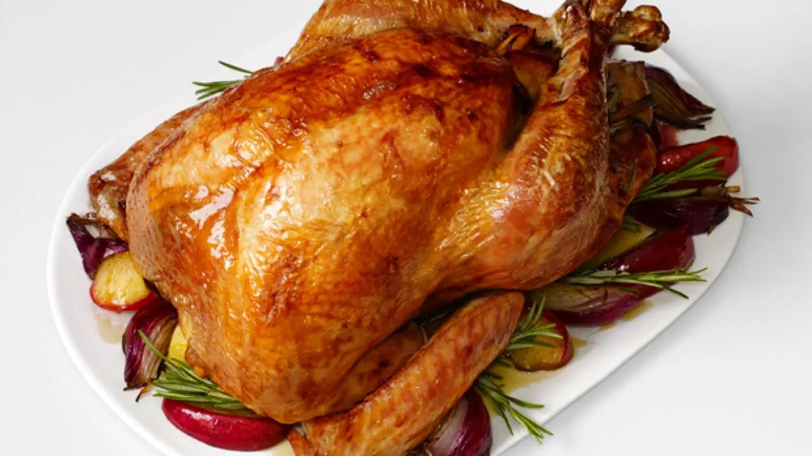

Roast Turkey

Description
This is hands down the best roast turkey recipe I've ever made. No need for fancy gimmicks like roasting it in a bag. All it takes is an overnight brine and the bird comes out juicy and flavorful every time.
Ingredients
- 1 (14 to 16 lb) frozen young turkey
- 1 C kosher salt
- 1/2 C light brown sugar
- 1 gal vegetable stock
- 1 Tbs black peppercorns
- 1 1/2 tsp allspice berries
- 1 1/2 tsp chopped candied ginger
- 1 gal heavily iced water
- 1 red apple, sliced
- 1/2 onion, sliced
- 1 cinnamon stick
- 1 C water
- 4 sprigs rosemary
- 6 leaves sage
- Canola oil
Steps
- Two to three days before roasting: Begin thawing the turkey in the refrigerator or in a cooler kept at 38 degrees F.
- Combine the vegetable stock, salt, brown sugar, peppercorns, allspice berries, and candied ginger in a large stockpot over medium-high heat. Stir occasionally to dissolve solids and bring to a boil. Then remove the brine from the heat, cool to room temperature, and refrigerate.
- The night before or early on the day you'd like to eat: Combine the brine, water and ice in the 5-gallon bucket. Place the thawed turkey (with innards removed) breast side down in brine. If necessary, weigh down the bird to ensure it is fully immersed, cover, and refrigerate or set in cool area for 8 to 16 hours, turning the bird once half way through brining.
- Preheat the oven to 500 degrees F.
- Remove the bird from brine and rinse inside and out with cold water. Discard the brine. Place the bird on roasting rack inside a half sheet pan and pat dry with paper towels.
- Combine the apple, onion, cinnamon stick, and 1 cup of water in a microwave safe dish and microwave on high for 5 minutes. Add steeped aromatics to the turkey's cavity along with the rosemary and sage. Tuck the wings underneath the bird and coat the skin liberally with canola oil.
- Roast the turkey on lowest level of the oven at 500 degrees F for 30 minutes. Insert a probe thermometer into thickest part of the breast and reduce the oven temperature to 350 degrees F. Set the thermometer alarm (if available) to 161 degrees F. A 14 to 16 pound bird should require a total of 2 to 2 1/2 hours of roasting. Let the turkey rest, loosely covered with foil or a large mixing bowl for 15 minutes before carving.
Notes
This recipe originally from the Food Network, thanks to Alton Brown.